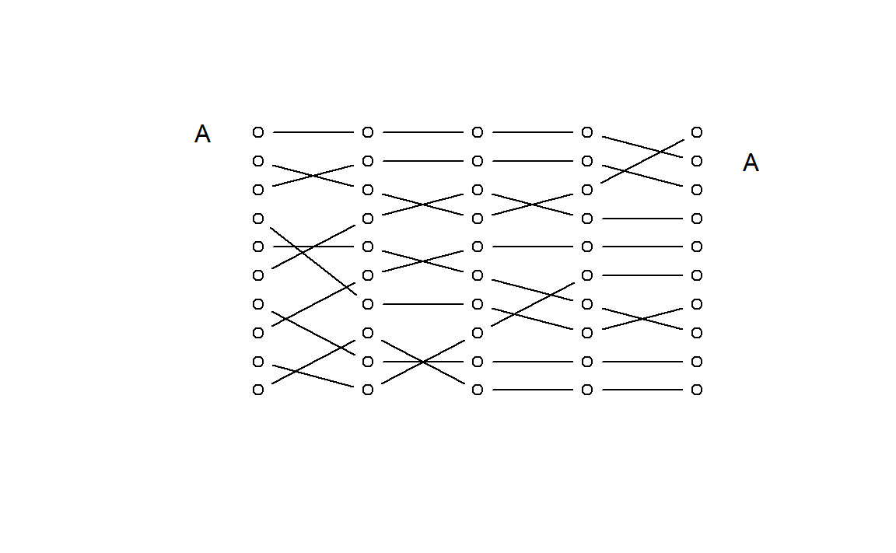

Chapter 8 Custom Plot Example
This example demonstrates the creation of custom visualizations in R. For reference, it took approximately two hours to develop the custom graphic.
This example was inspired by a blog about the popularity of computer languages on Stack Overflow. Joshua Kunst commented on the deficiencies of rank plots, and demonstrated a superior plot for representing changes in rank over time that looks like a NYC subway map.

To demonstrate how a similar graphic can be made in R, this chapter uses some hypothetical school data representing five years of rankings for ten schools within a specific district. The rankings represent some performance metric like graduation rates or average test scores.
| SCHOOL | RANK.2011 | RANK.2012 | RANK.2013 | RANK.2014 | RANK.2015 |
|---|---|---|---|---|---|
| A | 1 | 1 | 1 | 1 | 2 |
| B | 5 | 5 | 6 | 7 | 8 |
| C | 2 | 3 | 4 | 3 | 1 |
| D | 4 | 7 | 7 | 8 | 7 |
| E | 7 | 9 | 9 | 9 | 9 |
| F | 9 | 10 | 8 | 6 | 6 |
| G | 3 | 2 | 2 | 2 | 3 |
| H | 10 | 8 | 10 | 10 | 10 |
| I | 6 | 4 | 3 | 4 | 4 |
| J | 8 | 6 | 5 | 5 | 5 |
8.1 Basic Rank Plot
The original design for the graphic was very simple. It showed the starting rank and end rank of the school over the five-year period to give a sense of how much each school had changed. It is a little boring and also loses a lot of information regarding how consistent performance has been over time.
8.2 Creating a Submay Map Rank Plot
Let’s see how we put together a similar graphic using our school ranking data. Let’s start by looking at the variable names and the type of data we are working with:
| id | r1 | r2 | r3 | r4 | r5 |
|---|---|---|---|---|---|
| A | 10 | 10 | 10 | 10 | 9 |
| B | 6 | 6 | 5 | 4 | 3 |
| C | 9 | 8 | 7 | 8 | 10 |
Note that the first row of data belongs to School A, so we can reference it as df[ 1 , ]. The second row of data belongs to School B, which we can reference as df[ 2 , ]. Etc.
We will open a blank plotting window, then we can add the path of each school’s rankings from 2011 to 2015 using the points() function. We can play with the plot type to get the aesthetics correct.
Values for type= argument.
| Argument | Result |
|---|---|
| “p” | points |
| “l” | lines |
| “b” | both |
| “c” | only connecting lines |
| “n” | nothing |
8.3 Lines
Let’s try one with basic lines. Note that referencing a row of the data frame will return the ranking data for a single school:
Now let’s plot the rankings over time:
id <- df$id # save ID as separate variable
df <- df[ , -1 ] # drop ID from the dataset so it's all numeric
# save some useful dimension information
ymin <- min(df) # what is the smallest value in the data frame?
ymax <- max(df) # what is the largest value in the data frame?
num.x <- 5 # we have five years of data
# create an empty plot with the correct dimensions for our plot
plot.new()
plot.window( xlim=c(0,6), ylim=c(ymin,ymax) )
points( 1:5, df[1,], type="l" ) # school A
points( 1:5, df[2,], type="l" ) # school B
points( 1:5, df[3,], type="l" )
points( 1:5, df[4,], type="l" )
points( 1:5, df[5,], type="l" )
points( 1:5, df[6,], type="l" )
points( 1:5, df[7,], type="l" )
points( 1:5, df[8,], type="l" )
points( 1:5, df[9,], type="l" )
points( 1:5, df[10,], type="l" )
text( x=0.5, y=10, labels="A" ) # rank in 2011
text( x=5.5, y=9, labels="A" ) # rank in 2015
8.4 Connected Points
Not bad but I think that we can improve upon the aestetics. Let’s change the lines to points plus connecting lines.
plot.new()
plot.window( xlim=c(0,6), ylim=c(ymin,ymax) )
points( 1:5, df[1,], type="b" ) # school A
points( 1:5, df[2,], type="b" ) # school B
points( 1:5, df[3,], type="b" ) # etc...
points( 1:5, df[4,], type="b" )
points( 1:5, df[5,], type="b" )
points( 1:5, df[6,], type="b" )
points( 1:5, df[7,], type="b" )
points( 1:5, df[8,], type="b" )
points( 1:5, df[9,], type="b" )
points( 1:5, df[10,], type="b" )
text( x=0.5, y=10, labels="A" ) # rank in 2011
text( x=5.5, y=9, labels="A" ) # rank in 2015
That looks better, but if we want to match the subway map aestetic we need thicker lines. Let’s try the line width parameter, lwd.
plot.new()
plot.window( xlim=c(0,6), ylim=c(ymin,ymax) )
points( 1:5, df[1,], type="b", lwd=5, cex=2 )
points( 1:5, df[2,], type="b", lwd=5, cex=2 )
points( 1:5, df[3,], type="b", lwd=5, cex=2 )
points( 1:5, df[4,], type="b", lwd=5, cex=2 )
points( 1:5, df[5,], type="b", lwd=5, cex=2 )
points( 1:5, df[6,], type="b", lwd=5, cex=2 )
points( 1:5, df[7,], type="b", lwd=5, cex=2 )
points( 1:5, df[8,], type="b", lwd=5, cex=2 )
points( 1:5, df[9,], type="b", lwd=5, cex=2 )
points( 1:5, df[10,], type="b", lwd=5, cex=2 )
text( x=0.5, y=10, labels="A" ) # rank in 2011
text( x=5.5, y=9, labels="A" ) # rank in 2015
8.5 Separate Points and Connecting Lines
It’s not quite working because when we increase the line width, it makes our points that serve as the elbows thicker as well. Let’s try to separate these components:
plot.new()
plot.window( xlim=c(0,6), ylim=c(ymin,ymax) )
points( 1:5, df[1,], type="p", cex=2 )
points( 1:5, df[2,], type="p", cex=2 )
points( 1:5, df[3,], type="p", cex=2 )
points( 1:5, df[4,], type="p", cex=2 )
points( 1:5, df[5,], type="p", cex=2 )
points( 1:5, df[6,], type="p", cex=2 )
points( 1:5, df[7,], type="p", cex=2 )
points( 1:5, df[8,], type="p", cex=2 )
points( 1:5, df[9,], type="p", cex=2 )
points( 1:5, df[10,], type="p", cex=2 )
points( 1:5, df[1,], type="c", lwd=5 )
points( 1:5, df[2,], type="c", lwd=5 )
points( 1:5, df[3,], type="c", lwd=5 )
points( 1:5, df[4,], type="c", lwd=5 )
points( 1:5, df[5,], type="c", lwd=5 )
points( 1:5, df[6,], type="c", lwd=5 )
points( 1:5, df[7,], type="c", lwd=5 )
points( 1:5, df[8,], type="c", lwd=5 )
points( 1:5, df[9,], type="c", lwd=5 )
points( 1:5, df[10,], type="c", lwd=5 )
text( x=0.5, y=10, labels="A" ) # rank in 2011
text( x=5.5, y=9, labels="A" ) # rank in 2015That’s starting to look like what we want!
8.6 Add Labels
How about we add some more labels.
plot.new()
plot.window( xlim=c(0,6), ylim=c(ymin,ymax) )
points( 1:5, df[1,], type="p", cex=2 )
points( 1:5, df[2,], type="p", cex=2 )
points( 1:5, df[3,], type="p", cex=2 )
points( 1:5, df[4,], type="p", cex=2 )
points( 1:5, df[5,], type="p", cex=2 )
points( 1:5, df[6,], type="p", cex=2 )
points( 1:5, df[7,], type="p", cex=2 )
points( 1:5, df[8,], type="p", cex=2 )
points( 1:5, df[9,], type="p", cex=2 )
points( 1:5, df[10,], type="p", cex=2 )
points( 1:5, df[1,], type="c", lwd=5 )
points( 1:5, df[2,], type="c", lwd=5 )
points( 1:5, df[3,], type="c", lwd=5 )
points( 1:5, df[4,], type="c", lwd=5 )
points( 1:5, df[5,], type="c", lwd=5 )
points( 1:5, df[6,], type="c", lwd=5 )
points( 1:5, df[7,], type="c", lwd=5 )
points( 1:5, df[8,], type="c", lwd=5 )
points( 1:5, df[9,], type="c", lwd=5 )
points( 1:5, df[10,], type="c", lwd=5 )
text( 0.7, 1:10, id[order(df[,1])] )
text( 5.3, 1:10, id[order(df[,5])] )
text( 0, 1:10, paste(10:1,"---") )
text( 6, 1:10, paste("---",10:1) )
8.7 Add Axes and Title
And finally:
plot.new()
plot.window( xlim=c(0,6), ylim=c(ymin,ymax) )
points( 1:5, df[1,], type="p", cex=2 )
points( 1:5, df[2,], type="p", cex=2 )
points( 1:5, df[3,], type="p", cex=2 )
points( 1:5, df[4,], type="p", cex=2 )
points( 1:5, df[5,], type="p", cex=2 )
points( 1:5, df[6,], type="p", cex=2 )
points( 1:5, df[7,], type="p", cex=2 )
points( 1:5, df[8,], type="p", cex=2 )
points( 1:5, df[9,], type="p", cex=2 )
points( 1:5, df[10,], type="p", cex=2 )
points( 1:5, df[1,], type="c", lwd=5 )
points( 1:5, df[2,], type="c", lwd=5 )
points( 1:5, df[3,], type="c", lwd=5 )
points( 1:5, df[4,], type="c", lwd=5 )
points( 1:5, df[5,], type="c", lwd=5 )
points( 1:5, df[6,], type="c", lwd=5 )
points( 1:5, df[7,], type="c", lwd=5 )
points( 1:5, df[8,], type="c", lwd=5 )
points( 1:5, df[9,], type="c", lwd=5 )
points( 1:5, df[10,], type="c", lwd=5 )
text( 0.7, 1:10, id[order(df[,1])] )
text( 5.3, 1:10, id[order(df[,5])] )
text( 0, 1:10, paste(10:1,"---") )
text( 6, 1:10, paste("---",10:1) )
title( ylab="Rank", line=1 )
axis( side=1, tick=F, at=1:5, labels=2011:2015 )
title( main="School Rank 2011-2015" )We are in business.
8.8 Generalizing Code
Because we are plotting data row by row (each row of data represents rankings for one school over time), we can simplify our code by writing the plot() command once inside a loop (for loops are covered in subsequent chapters):
| r1 | r2 | r3 | r4 | r5 |
|---|---|---|---|---|
| 10 | 10 | 10 | 10 | 9 |
| 6 | 6 | 5 | 4 | 3 |
| 9 | 8 | 7 | 8 | 10 |
plot.new()
plot.window( xlim=c(0,6), ylim=c(ymin,ymax) )
for( i in 1:nrow(df) )
{
points( 1:num.x, df[i,], type="p",
cex=1.5, col=gray(0.5,0.5),
pch=21, bg="white" )
points( 1:num.x, df[i,], type="c",
lwd=6, col=gray(0.5,0.5) )
}
8.9 Improved Aesthetics
Finally, let’s play with the colors and sizes of elements so that we can highlight specific schools for our report.
plot.new()
plot.window( xlim=c(0,6), ylim=c(ymin,ymax) )
# add each row to a loop instead of repeating lines of code
for( i in 1:nrow(df) )
{
points( 1:num.x, df[i,], type="p", cex=1.5, col=gray(0.5,0.5),
pch=21, bg="white" )
points( 1:num.x, df[i,], type="c", lwd=6, col=gray(0.5,0.5) )
}
text( 0.7, 1:10, id[order(df[,1])], col=gray(0.5,0.5) )
text( 5.3, 1:10, id[order(df[,5])], col=gray(0.5,0.5) )
text( 0, 1:10, paste(10:1,"---"), col="gray60", cex=0.7 )
text( 6, 1:10, paste("---",10:1), col="gray60", cex=0.7 )
title( ylab="Rank", col.lab="gray80", cex.lab=1.5, line=1 )
axis( side=1, tick=F, at=1:5, labels=2011:2015, col.axis="gray", cex.axis=1 )
title( main="School Rank 2011-2015", col.main="gray50" )
# highlight some schools
points( 1:5, df[2,], type="c", lwd=6, col="firebrick4" )
text( 0.7, df[2,1], "B", col="firebrick4" )
text( 5.3, df[2,5], "B", col="firebrick4" )
points( 1:5, df[6,], type="c", lwd=6, col="steelblue" )
text( 0.7, df[6,1], "F", col="steelblue" )
text( 5.3, df[6,5], "F", col="steelblue" )
points( 1:5, df[3,], type="c", lwd=6, col="goldenrod" )
text( 0.7, df[3,1], id[3], col="goldenrod" )
text( 5.3, df[3,5], id[3], col="goldenrod" )